BoatRun - User Guide
One native app for rowing, coxing and coaching. Two web tools for afterwards.
| What it is | Where you use it | |
|---|---|---|
| BoatRun | The app. Row, Cox and Coach modes in one. | iPhone, in the boat or in the coach launch |
| Analyser | Post-session analysis in a browser | PC (best) or tablet |
| Viewer | Live spectator map | Any browser, any device |
BoatRun is downloaded from the app Store or google play. Analyser and Viewer stay as web pages you just bookmark.
Contents
- Quick Start
- Mounting the phone
- Roles - Row, Cox, Coach
- Signing in - Drive, Account, Apple
- What happens to your data
- Basic, trial and Pro
- Heart rate monitor
- Recording a session
- Layouts and tiles
- Workouts
- Coach mode
- Demo modes
- Session log, exports and Restore from Drive
- Analyser
- Viewer
- Metrics reference
- Limitations and warnings
- Troubleshooting
1. Quick Start
Everything you need to be recording, in about five minutes.
Step 1 - Install
Install BoatRun from the App Store (or from your TestFlight invitation if you are a beta tester). Open it once while you still have signal and Wi-Fi.
Step 2 - Pick your role
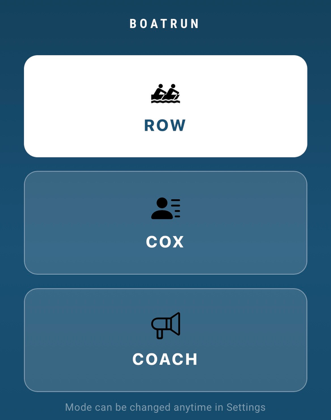
The first thing you see is the launch screen. Three buttons:- ROW - you are rowing, phone in the boat
- COX - you are coxing, phone facing the other way
- COACH - you are following the squad, phone in your hand
Tap one. The app asks for motion and location access the first time - allow both. You can change role any time in HOME → SETTINGS → ROLE.
Step 3 - Mount the phone
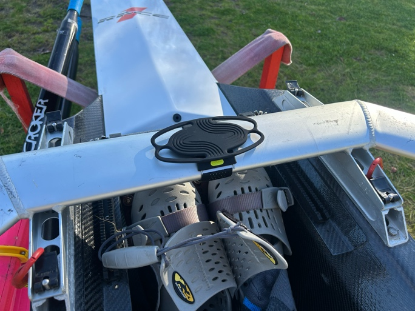
Flat in the boat, screen up, in portrait or landscape mode. See Mounting the phone for the detail.Step 4 - Connect Heart Rate
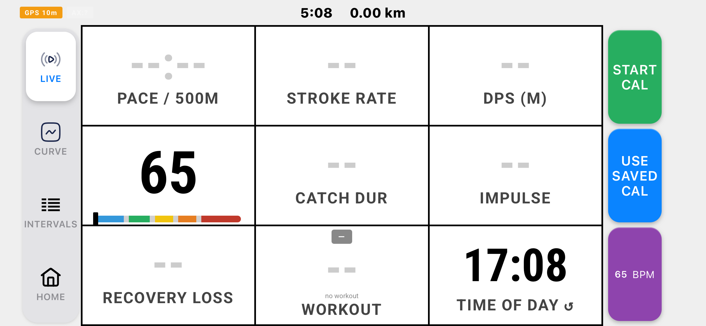
Press the purple CONNECT HR button to connect bluetooth HRM. Once connected, the app will remember the device for fast connection in the future. The heart rate will be displayed in the purple button. Heart rate can also be connected at any time from the settings menu.Step 4 - Calibrate
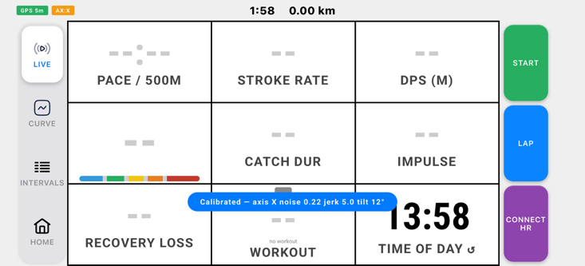
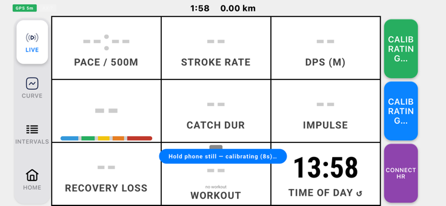
Sit still, boat still, phone already in the mount. Tap START CALIBRATION and hold still for 8 seconds. This measures the noise floor, sets the catch threshold, and pins which axis is the surge axis. The phone MUST BE IN THE ORIENTATION YOU ARE GOING TO ROW WITH. For example, calibrating in portrait mode then mounting in landscape mode will corrupt all the inertially derived data.Step 5 - Start rowing
Tap START, then row. The AX pill turns green within a few strokes once stroke detection locks on.
Step 6 - Finish
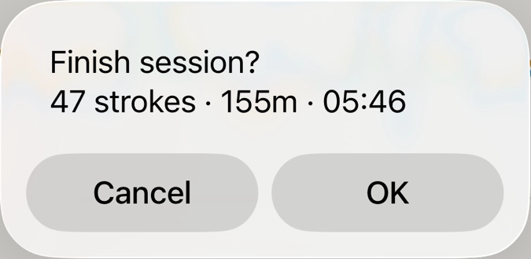
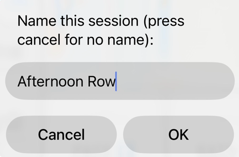
Tap STOP to pause, FINISH to end. The session saves to the phone and, if you’re signed in to Drive, uploads automatically.The status pills
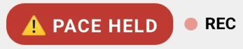
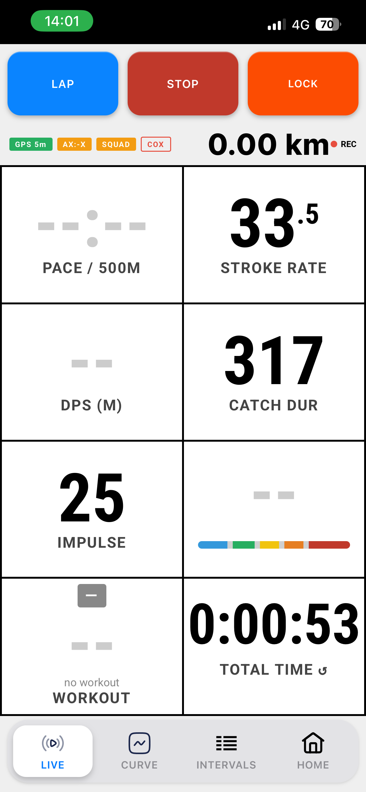
Top of the screen in portrait or landscape: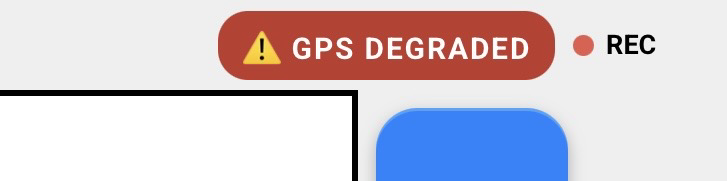
| GPS | Green = good fix. Orange = accuracy worse than 8m. Red = worse than 25m, pace suppressed. |
|---|---|
| ACC | Red means no accelerometer available - reopen the app. |
| AX:X / AX:Y | Which axis is being used for surge. Orange = detected but not locked. Green = locked, stroke detection live. |
| SQUAD | Orange when connected but no one watching. Green when coach / spectators watching. |
| COX | Only shows in Cox role. |
| GPS DEGRADED | The app cannot corroborate its speed reading against your position track, so pace, distance and DPS are not trustworthy at that moment. Clears itself within a few strokes once the phone has a clear view of the sky. |
| PACE HELD | A single GPS fix jumped more than 30% from your last good pace, which no boat can actually do. The app shows your last good pace instead of the spike. Clears itself within about 6 seconds. |
Common first-use problems
| Symptom | Fix |
|---|---|
| AX pill stays orange | Recalibrate with the phone in the mount and the boat still |
| CAL pill red | Restart the app and allow access to motion and orientation |
| GPS pill red | iOS Settings → Privacy & Security → Location Services → BoatRun → While Using, Precise Location on |
| Nothing uploads | Tap the button in the top bar and connect google Drive |
| Recording stops at 5 minutes | You’re on Basic. See Basic, trial and Pro |
| Screen goes dark mid-row | Shouldn’t happen - the app holds the screen awake. If it does, check iOS Low Power Mode |
| Water splash changes screens | Use the LOCK button to reduce errant touch detection. You will need to unlock to press LAP, change screens or end the session. For further protection, triple click the power button (iPhone) to start guided access. |
2. Mounting the phone
Orientation
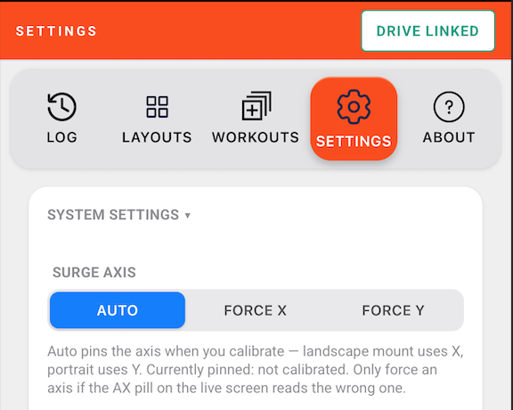
Portrait or landscape both work. What matters is that the phone is flat, screen up, and rigidly attached to the hull. The newer phones (iphone 15 and newer) have dual band GPS which are significantly better at tracking. Due to the reflection of signal from water, carbon fibre and metals components, placing a rubber foam matt under the mount increases performance, particularly on older phones.- Portrait - the app uses the Y axis for surge
- Landscape - the app uses the X axis for surge
Calibration works out which one you’re using and pins it. You don’t have to tell it anything. If the calibration fixes to the wrong axis, you can force a flip to another axis in system settings instead of keeping AUTO mode.
Tilt
Flat is best. The app measures your mount angle during calibration and compensates for it, but the compensation gets less reliable the further you go.
- 0-10° - no meaningful loss of accuracy
- 10-30° - works, accuracy degrades gradually
- Over 30° - not supported; the surge signal gets mixed with heave and metrics become unreliable
If the app detects that your current tilt is more than 8° different from your saved calibration, it will offer to recalibrate before you start. Take the offer - it takes 8 seconds.
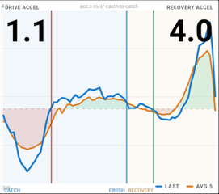
Cox modeIn Cox role the phone is facing the bow instead of stern. If you fail to select cox mode, the primary indicator will be unusual stroke curves as shown here.
Position in the boat
Closest to the rigger gives the strongest stroke signal. Anywhere rigid is workable. What ruins it is a mount that flexes or rocks - any movement between phone and hull corrupts every accelerometer metric, and a mount that wobbles near stroke frequency will corrupt stroke ratio and Stroke Char specifically.
Recalibrate whenever you move the phone, change its angle, or switch boats.
3. Roles - Row, Cox, Coach
One app, three modes. Set at launch, changeable in HOME → SETTINGS → ROLE.
| Role | Tab bar | What it does |
|---|---|---|
| ROW | LIVE · CURVE · INTERVALS · HOME | Full recording, all metrics, stroke curve |
| COX | LIVE · CURVE · INTERVALS · HOME | Same as Row, with the accelerometer sign flipped for a bow-facing cox |
| COACH | COACH · HOME | Live squad map and rower tiles. No recording of your own. |
You cannot change role while a recording is running - stop first.
Row and Cox both broadcast to a squad if a squad code is set. Coach mode receives.
4. Signing in - your account and your storage
There are two of these and they do genuinely different jobs. Once you see the difference it stops being confusing:
- Your BoatRun account - who you are. Carries your Pro subscription.
- Your Google Drive - where your files go. Storage, not a login.
You can have one, both, or neither.
Your BoatRun account
HOME → SETTINGS → ACCOUNT → ACCOUNT & PLAN…
Two buttons, either will do:
- Continue with Apple
- Continue with Google
Pick whichever you prefer. What the account is for:
- It carries your Pro subscription between the app and the Analyser
- It’s how the Analyser knows you’ve paid to unlock the pro features
Without linking your account, a Pro subscription bought on your phone stays on that phone and the Analyser won’t recognise it.
Adding the second provider. Once you’re signed in, the panel offers to link the other one - Apple if you signed in with Google, Google if you signed in with Apple. Optional, and it takes one tap. Worth doing: it’s a spare key to the same account if you ever lose access to the first.
Do it deliberately, because your Apple ID and your Google account almost certainly use different email addresses, so they are not recognised as the same person automatically.
Your Google Drive
The button in the top bar. This is not a second account - it’s you granting BoatRun permission to write into a private folder inside your own Google Drive.
- Every finished session uploads there automatically
- The folder is hidden - it does not appear in your normal Drive file list, and no one can read it or access it except you
- The analyser is the only other to manage that folder once you sign into the same google drive account
- Skip google drive sync and sessions live only on the phone or are exported from app via TCX, FIT or JSON.
Recommendations
- Connect Drive first. This is the one that protects your data - without it there’s no backup and the Analyser has nothing to open.
- Then sign in to your BoatRun account, with whichever of Apple or Google you prefer.
- Then link the other provider. One tap, spare key.
- If you only ever do one thing, do Drive.
5. What happens to your data
| Where | What’s there | Who can see it |
|---|---|---|
| Your phone | Every session, full detail. Raw motion and GPS traces in a local database. | You |
| Your Google Drive | A copy of each session, in a private hidden app folder | You. BoatRun can write there and recover sessions from there. It can also delete the entire drive via SETTINGS -> YOUR DATA. Analyser can read from there and delete individual sessions. |
| Squad cloud (while connected) | Live rate, pace, position, and the metrics your coach has enabled | Your coach and anyone with the squad code |
| Squad cloud (if you tap Send to coach) | The full session file | Your coach and anyone with the squad code, until pruned |
| Strava (Pro, if linked) | The activity, as a TCX upload | Per your Strava privacy settings |
| Analyser | Your Personal Bests, tile order and units | You, once signed into your google drive |
Live squad data
Only sent while you have a squad code set and connected. Disconnect in Settings and nothing leaves the phone. Position and metrics are sent - treat a squad code like a shared password.
Clearing things out
- DELETE MY DRIVE DATA - Settings → YOUR DATA. Permanently deletes every BoatRun session in your Drive. Local sessions are untouched.
- PRUNE SQUAD SESSIONS (Coach mode only) - Settings → YOUR DATA. Removes squad cloud records older than 21 days for the squad code you are connected to.
- Per-session Drive delete - Analyser only. See below.
Deleting on the phone does not delete from Drive once synced
This one catches everyone.
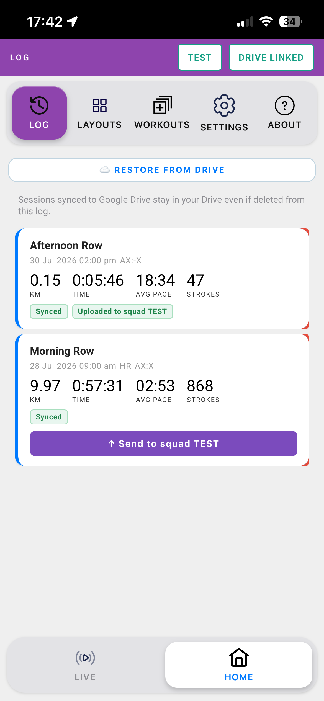
Deleting a session in HOME → LOG removes it from the phone only once the green Synced button is displayed. The Drive copy stays exactly where it is. The app also remembers that you deleted it, so it won’t quietly re-download next time you sync - which is what you want, but it does mean the file is now invisible to you from the phone while still occupying your Drive. You can use the RESTORE FROM DRIVE to bring the session back to the phone.To actually delete a session from Drive, use the Analyser. Open the Analyser, find the session in the list, and tap the trash icon next to it.
The only exception is the DELETE MY DRIVE DATA button in the SETTINGS - YOUR DATA tab of the app, which wipes everything at once. There is no per-session Drive delete in the app.
6. Basic, trial and Pro
Free trial
Every new install gets 30 days of full Pro, granted by the app. No card, no sign-up, nothing to cancel. The Settings → SUBSCRIPTION card counts down the days.
When it expires, you drop to Basic. Nothing is deleted and nothing is locked away - all your recorded sessions, all your exports, all your raw data stay fully accessible as long as you keep your google drive or your exported JSON files.
What Basic gives you
- Pace, Stroke Rate, DPS and Heart Rate tiles
- All the selectable-tile fields (time of day, elapsed, lap time, distances, average and lap pace)
- 5 minute recording limit per session
- Full session log, full Drive sync, full restore
- Every export - JSON, TCX, FIT - always free
- Analyser: single-session analysis, always free
- Viewer: always free, always full
Raw data is never held hostage. If you recorded it, you can export it.
What Pro adds
| Basic | Pro | |
|---|---|---|
| Recording length | 5 min | Unlimited |
| Pace, Rate, DPS, HR | ✓ | ✓ |
| Catch Slope, Catch Dur, Drive Time | - | ✓ |
| Impulse, Drive Accel, Recovery Accel | - | ✓ |
| Recovery Loss, Vel Efficiency | - | ✓ |
| Stroke Char, Stroke Ratio | - | ✓ |
| Live stroke curve (CURVE tab) | - | ✓ |
| Workout tile and interval countdown | - | ✓ |
| Strava auto-sync | - | ✓ |
| Coach: full squad monitoring, video, workout push | pace + rate only | ✓ |
| Analyser: multi-session comparison, video overlay | - | ✓ |
| All exports (JSON / TCX / FIT / CSV) | ✓ | ✓ |
| Drive sync and restore | ✓ | ✓ |
One subscription covers the app and the Analyser on the same account. Monthly or yearly. Buy it from Settings → SUBSCRIPTION → UPGRADE TO PRO, or from the Account & Plan panel.
Locked tiles show PRO - Upgrade to unlock rather than disappearing, so you can see what you’re missing.
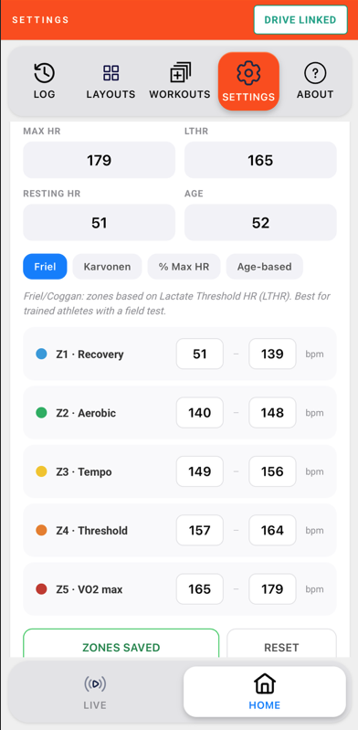
7. Heart rate monitorBoatRun connects directly to a Bluetooth heart rate strap - Polar H10, Garmin HRM, Wahoo, anything speaking standard BLE heart rate. Connect on live screen prior to start or in the settings menu.
Connect before you press Start. The app reconnects automatically on later sessions once it knows the strap, but the first pairing should happen on dry land.
HR appears as its own tile with a zone bar, is recorded into the session, exports in TCX and FIT, and charts in both the session detail and the Analyser.
Zones are configurable - the app supports Friel/Coggan LTHR zones, percentage of max HR, and age-predicted. The zones are synced via your google drive and are available in the header of the analyser website during workout review.
8. Recording a session
The LIVE tab
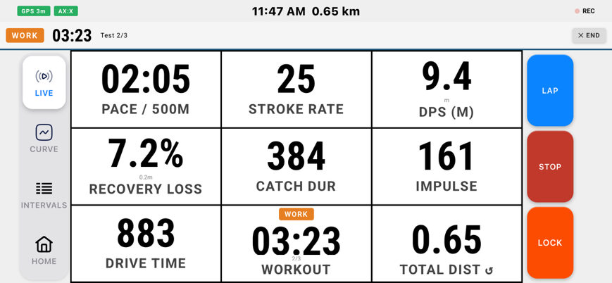
Your main display of user selectable metrics. The layouts menu defines the variables displayed here.The CURVE tab (Pro)
The acceleration curve for one full stroke, catch to catch. Last stroke in blue, 5-stroke rolling average in orange. Green fill above zero acceleration, red below zero acceleration.
Four tiles underneath. Tap on each one to bring up a selection of available metrics.
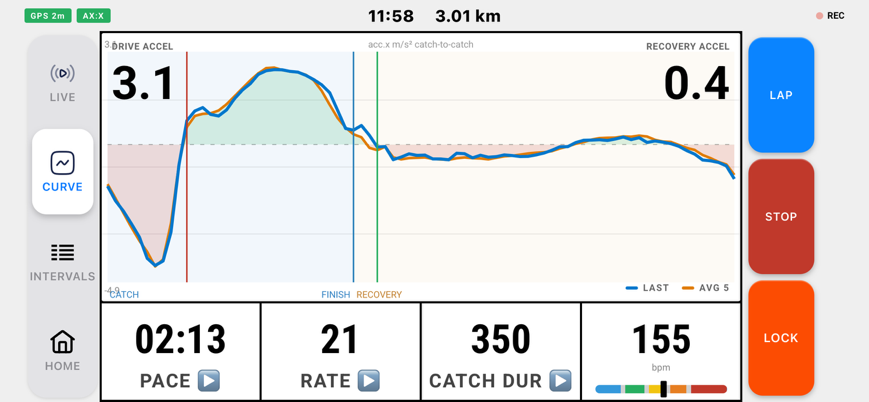
The INTERVALS tab
 Shows the step sequence and
per-interval metrics as you complete them.
Shows the step sequence and
per-interval metrics as you complete them.
Laps
Tap LAP to mark a split. Each lap records time, distance, pace, rate and max HR.
Tapping Lap while stopped pauses the lap timer and it resumes when the boat moves again (READY MODE). Useful for lining up to start an interval without the stationary time polluting the next work lap.
With a workout loaded, pressing Lap ends open steps (for example, warmup or open rest periods). Timed and distance steps advance on their own (for example, work for 1000m or rest for 4 minutes).
Stopping and finishing
STOP pauses, RESUME continues, FINISH ends and saves.
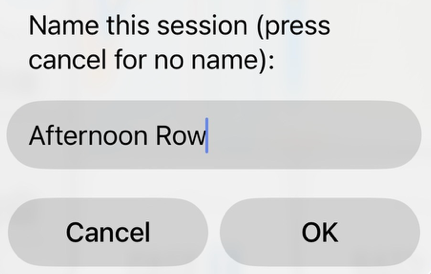
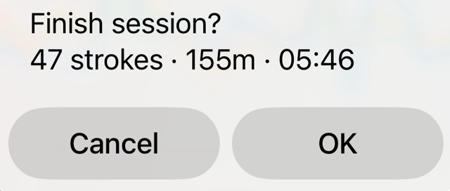
The app autosaves at least every 2 minutes. If it closes mid-session (battery, crash, anything) the recording is recovered next time you open the app.9. Layouts and tiles
HOME → LAYOUTS
A layout profile stores a grid size and a metric per slot, held separately for portrait and landscape for each grid size. Rotate the phone and the layout swaps automatically.
Built in
| Profile | Portrait | Landscape |
|---|---|---|
| Race | 2×3 - pace, rate, catch dur, HR, workout, selectable | 2×2 - pace, rate, catch dur, workout |
| Training | 2×4 - pace, rate, DPS, catch dur, impulse, HR, workout, selectable | 3×3 - pace, rate, DPS, HR, catch dur, impulse, recovery loss, workout, selectable |
Tap a profile name to make it active. + NEW PROFILE to build your own - choose a grid for each orientation, then tap each slot to assign a metric.
Grid options - landscape: 3×3, 3×2, 2×2, 2×1, 1. Portrait: 2×4, 2×3, 2×2, 1×2, 1.
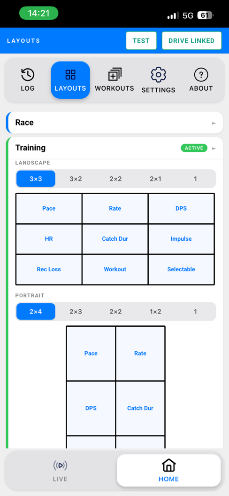
Assignable metrics| Tile | Tier |
|---|---|
| Pace | Basic |
| Stroke Rate | Basic |
| Dist / Stroke | Basic |
| Heart Rate | Basic |
| Selectable | Basic |
| Catch Slope | Pro |
| Catch Dur | Pro |
| Drive Time | Pro |
| Impulse | Pro |
| Drive Accel | Pro |
| Recovery Accel | Pro |
| Recovery Loss | Pro |
| Vel Efficiency | Pro |
| Stroke Char | Pro |
| Stroke Ratio | Pro |
| Workout | Pro |
| - (blank) | - |
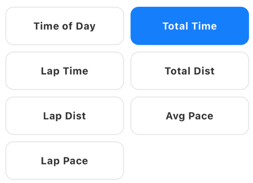
Tapping on a SELECTABLE TILE brings up a sub-menu of available options. Each slot remembers its own setting between sessions.10. Workouts
HOME → WORKOUTS
Built in
Race 1000m - open warmup until LAP pressed → 1000m work (starts when you start rowing) → open cooldown until press STOP.
 Baseline: Rate
Ladder - open warmup → 4 × [1 min @24, 1 min @26, 1 min @28, 1
min @30, 4 min rest] → open cooldown. The last rest is skipped.
Baseline: Rate
Ladder - open warmup → 4 × [1 min @24, 1 min @26, 1 min @28, 1
min @30, 4 min rest] → open cooldown. The last rest is skipped.
Building your own
+ NEW WORKOUT → name it → add steps.
- Warmup / Cooldown - run until you tap Lap
- Work - time or distance, with an optional target rate and/or pace
- Rest - time or distance
Select two or more adjacent steps and tap REPEATS to group them, then set the repeat count and whether to skip the final rest.


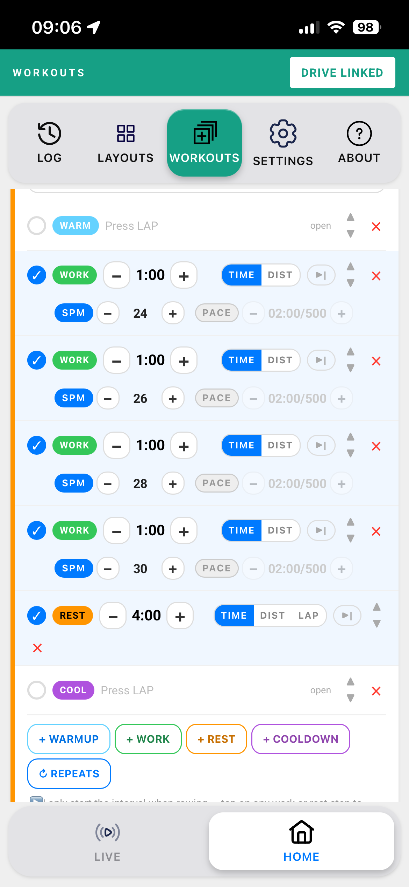
▶| Start when rowing (READY MODE) - tap a work or rest step to enable. The step holds until you’re actually rowing (two strokes at 12 spm or more). Good for racing starts once you’re paused at the start.During the workout
The INTERVALS tab counts down. The workout tile shows the current step and time or distance remaining. The step is also displayed in the top left corner of the display and on the coach’s app (if connected). A 5-second countdown overlay appears before each work interval along with a tone (ensure the phone volume in control centre is at maximum and phone not on silent). At the end of the work interval, a tone will sound and a lap summary will appear.
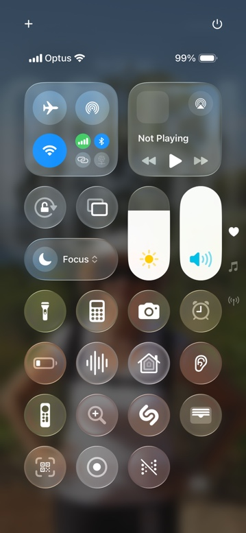
Each interval is saved in the interval tab and exported for later analysis.11. Connect to coach
Connect to a squad
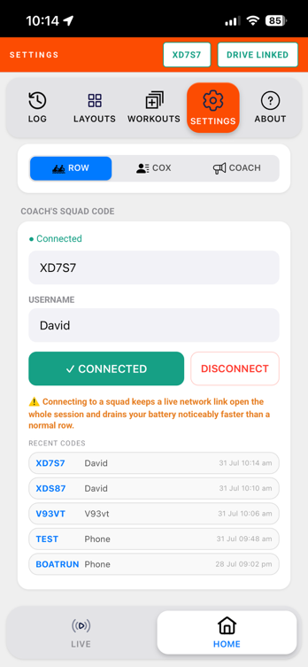
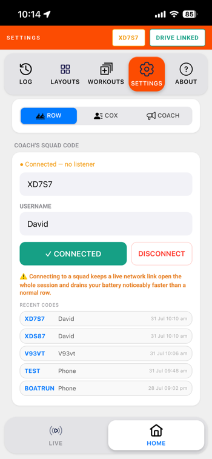
HOME → SETTINGS → COACH’S SQUAD CODEEnter the code given by your coach (tap on the list below for previously used codes)
Enter your name
SAVE & CONNECT
The coach will be able to see your location and name straight away. They will not be able to see your data until you press start. Advanced metrics and stroke curve will only be seen by your coach if you’re a PRO user.
Your coach will be able to send you workouts and press lap for you. This is ideal for squads where everyone starts the interval at the same time.
Note: Coach mode keeps a live network open so drains your battery noticeably faster than a normal row, especially when the coach is viewing your stroke curve a lot. Having no one watching you via coach mode or viewer application (no listener) uses negligible extra battery. It also means that in areas without reliable phone reception, coach mode may not be available. For example, Lake Barrington.
11. Coach mode
Set role to COACH at launch or in Settings.
Setting up a squad
HOME → SETTINGS → YOUR SQUAD
- Tap GENERATE for a fresh random code or manually set
- Enter your name
- SAVE & CONNECT
- Give the code to your rowers - they enter it in the same place under COACH’S SQUAD CODE
- Click SHOW QR for spectators to open the viewer website (take a screenshot and send it)
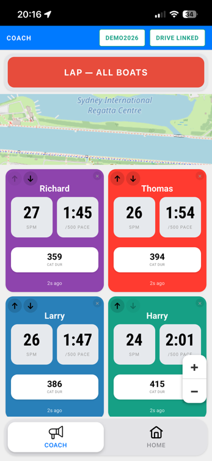
Generate a new code each session, or at least each term. Anyone with the code sees the squad’s live positions and can download squad synced sessions through the analyser website.The COACH tab
Squad map - every connected rower as a labelled dot, with your own position shown separately. Tap a dot or the individual’s tile to open that rowers detailed view (PRO only).
Rower tiles - one per rower: name, big stroke rate, big pace, plus whichever secondary metrics you’ve enabled in layouts. A tile greys out when no data has arrived recently. Use the + / − buttons to scale the grid. Use the arrow buttons in the top left of each tile to swap the order.
LAP - ALL BOATS sends a simultaneous lap to every connected rower. This is useful for starting an interval for everyone at the same time.
Rower detail
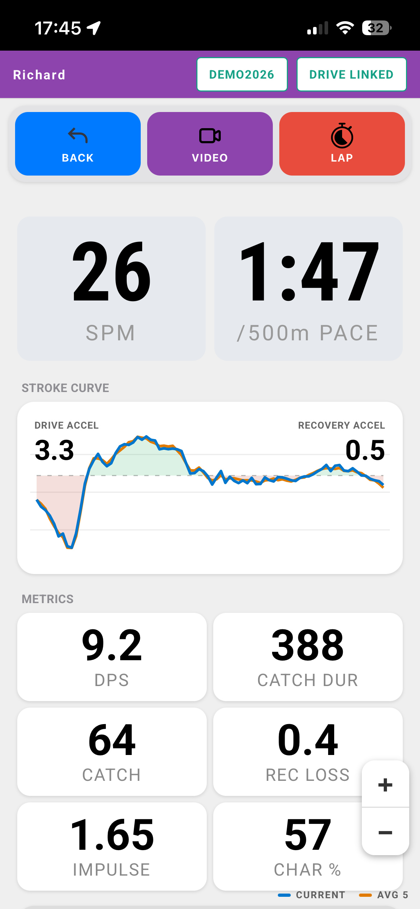
Tap a tile to open it. Full metrics, live stroke curve, mini route map, and a lap button for that rower.REQUEST CURVE asks that rower’s phone to start streaming its stroke curve. It streams for as long as you’ve set in STROKE CURVE REQUEST LENGTH (5-60 seconds). Longer is smoother but costs battery on the rower’s phone, so it’s a request rather than something always on.
VIDEO records a clip through the phone camera, tagged to that rower and that moment. The clip can be dropped onto the session later in the Analyser’s video overlay. Alternatively, you can just record videos from your phone and import them into the analyser, however they won’t be specifically linked to that rower’s file. The save folder can be set in SETTINGS-> SYSTEM SETTINGS when in coach mode. Recommended video folder is a cloud synced folder so videos can easily be accessed from the analyser.
Pushing workouts
HOME → WORKOUTS → tap a workout → PUSH TO SQUAD. It loads on every connected rower. They get a confirmation prompt if they’re mid-session.
Battery - read this
Connecting to a squad costs a lot of battery. It keeps a live network connection open for the whole session, on top of GPS, the accelerometer, and a screen that never sleeps.
How often your phone transmits depends on what’s happening:
| Situation | Sends every |
|---|---|
| Not rowing | 60 seconds |
| Rowing, coach not detected | 30 seconds |
| Rowing, coach online | 9 seconds |
| Coach has requested your stroke curve | 3 seconds |
The app deliberately backs off when nobody is listening, and it batches samples between sends rather than waking the radio constantly. But a two-hour squad session with a coach connected will use noticeably more battery than the same row on your own - expect up to double the power consumption.
Practical advice:
- Start every squad session at 100%
- Turn the screen brightness down - it’s usually the single biggest drain
- Carry a battery pack for long mornings or multiple sessions
- If you don’t need live monitoring, don’t set a squad code. You can still Send to coach afterwards, which costs nothing during the row.
- The coach’s own phone drains fastest of all - it’s receiving from everyone
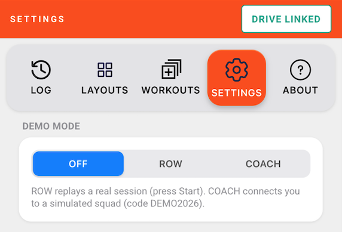
12. Demo modesHOME → SETTINGS → DEMO MODE
For learning the app on dry land, showing someone what it does, or testing without getting wet.
ROW demo
Set it to ROW, go to the LIVE screen, press Start.
The app replays a real recorded session - genuine stroke data, real curve shapes, real heart rate. Every tile, the curve tab, and the metrics all behave exactly as they would on the water. Nothing is being read from the sensors except the status pills at the top of your display.
Use it to set up your layout, learn what the metrics look like at different rates, or check a workout runs the way you expect.
COACH demo
Set it to COACH and the app connects you to a simulated squad on code DEMO2026 - four rowers (Thomas, Richard, Harry and Larry) generating plausible live data every three seconds.
The map, tiles, detail views and curve requests all work. It’s the fastest way to see what coach mode does without organising four people and a boat.
Things to know
- Demo sessions are never uploaded - not to Drive, not to a squad. Nothing you do in demo mode pollutes real data.
- Switching to COACH demo replaces your squad code with DEMO2026. Turn demo off and set your real code again afterwards.
- Row demo only works in Row or Cox role. Coach demo needs Coach role.
- Set it back to OFF before a real row. The app also clears it automatically in most cases, but check.
13. Session log, exports and Restore from Drive
HOME → LOG
Every session, newest first, with distance, duration, pace and a synced badge if the Drive copy is confirmed. Tap one to open it.
Session detail
Summary cards, colour-coded by what affects them - green independent, blue boat-dependent, red condition-dependent. Then lap tables, workout interval breakdown if there was one, and charts for every metric.
RENAME gives the session a name, which also updates the Drive copy if it’s synced.
Analyser ↗ hands the session straight to the Analyser in a browser.
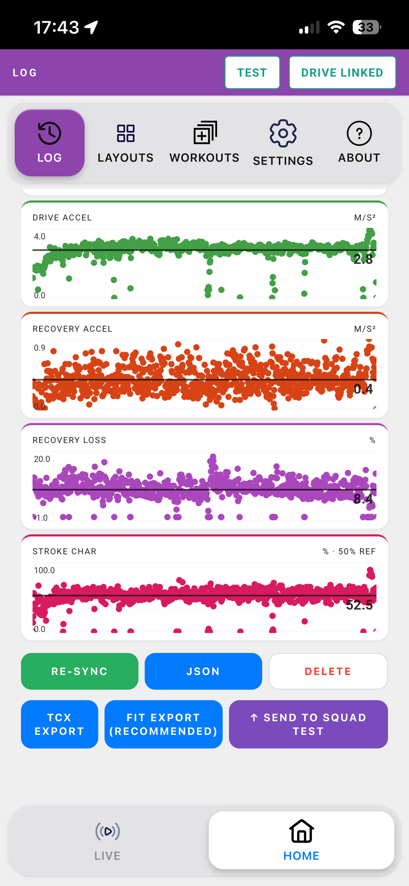
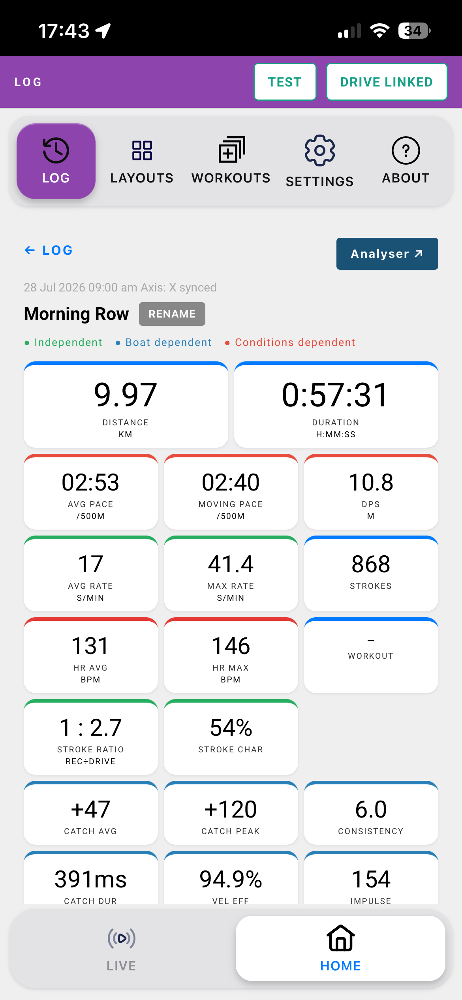
Exports
At the bottom of the session detail.
| Button | What you get |
|---|---|
| Sync to Drive / Re-sync | Uploads this session to your Drive app folder. Turns green once confirmed. |
| JSON | The complete session - every stroke, every metric, raw traces where present. This is the full-fidelity format and the one the Analyser prefers. |
| TCX Export | Standard training file. Uploads to Strava, Garmin Connect, TrainingPeaks. GPS track plus heart rate. |
| FIT Export (Recommended) | Same destinations as TCX, better fidelity - this is the format Garmin and Strava handle most cleanly. Use this one unless something specifically wants TCX. Garmin connect on Safari sometimes has difficulty importing FIT files. Recommend using Chrome to import FIT to Garmin Connect. |
| Send to coach | Uploads the whole session file to your squad’s cloud storage, so your coach can open it in the Analyser. Turns green and shows Uploaded once done. Needs a squad code set. Sessions over about 5MB won’t send - use Drive sync for those or export JSON for those |
| Delete | Removes it from that device only. See below. |
All exports are free on every tier. Recording it means owning it.
Strava - Pro users who have linked Strava in Settings get automatic upload after every session. No manual step.
Restore from Drive
At the top of the log list: ☁ Restore from Drive.
You need this because the phone is not the safe copy. Reasons sessions go missing locally:
- You deleted them to free up space
- You got a new phone
- You reinstalled the app
- iOS evicted the app’s storage under extreme pressure
Restore lists everything in your Drive folder that isn’t currently on the phone. Tap one to pull it back. Already-present sessions are skipped.
What comes back: the summary, all the charts, the lap and interval tables, and everything needed to re-export as JSON, TCX or FIT.
If restore fails with a storage message, delete some old local sessions first - their Drive copies are unaffected.
Deleting
Deleting in the log removes the session from the phone only. The Drive copy survives untouched, and the app remembers the deletion so it won’t reappear on the next sync.
Per-session Drive deletion happens in the Analyser, using the trash icon beside each session in its list. The app’s only Drive delete is the all-or-nothing DELETE MY DRIVE DATA in Settings.
This is deliberate: it makes deleting from the phone completely safe. You can free up space aggressively knowing nothing is actually lost.’
14. Analyser
The Analyser is a web page. Bookmark it, open it on a desktop for preference or an iPad at a pinch. There’s nothing to install.
It reads directly from the same Google Drive folder the app writes to, so anything you’ve synced is already there.
Getting in
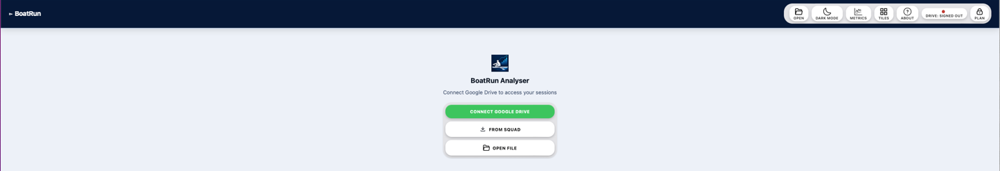
Three ways to load data:
- Connect Google Drive - lists everything in your Drive folder
- From Squad - enter a squad code and pull sessions your rowers have sent. This is how a coach reviews the squad’s work.
- Open file - a
.``json,.fit,.tcxor.csvfrom anywhere.
The home screen
Once signed in, before you open anything, you get an overview.
Summary - Longest row and Total Strokes across everything, then Sessions / Distance / Time / Avg Pace for three ranges: all-time, a month you can step back through, and a week you can step back through. Use the ‹ › arrows to move between periods.
Personal Bests - your fastest 500m, 1km, 2km, 5km and 10km ever recorded. These are true rolling best efforts, not lap times: the Analyser slides a window along your GPS trace looking for the quickest that distance was ever covered, anywhere within any session. A 2k PB found in the middle of a long steady row counts.
Tap a PB card to open the session it came from.
Scan All for Records - walks every session in your Drive and rebuilds the PB table. Run this once after you first sign in, and again after uploading a backlog. It takes a while with a large library - the button shows progress.
Reset Records clears them; re-scan to rebuild.
Sessions - the full list, with a trash icon on each for permanent Drive deletion.
Loading a session
Click any session. If you load more than one via the +add for comparison (PRO only), each gets a tab across the top - click a tab to make that session active.
Units bar
Sets pace unit (/500m, /1km, km/h, /mile, mph), distance (km or miles) and DPS sub-unit (m, ft, in). Applies instantly everywhere - cards, charts, tables. This is synced across your app and logins via your google cloud drive.
Summary cards
Across the top: Distance, Duration, Pace, Rate, DPS, Catch Dur, Drive Time, Catch Slope, Impulse, Drive Accel, Recovery Accel, Recovery Loss, Ratio, Stroke Char, Vel Efficiency, Avg HR.
Each card is colour-coded by category and clicking a card toggles that metric on or off in the main chart. That’s the primary way you control what’s plotted.
Tiles in the toolbar lets you reorder the cards and hide ones you never use. Pace and Rate are always on.

Metrics in the toolbar opens the full glossary - what each one means and how to read it.
Stroke chart
The main event. Every metric you’ve enabled, plotted stroke by stroke.
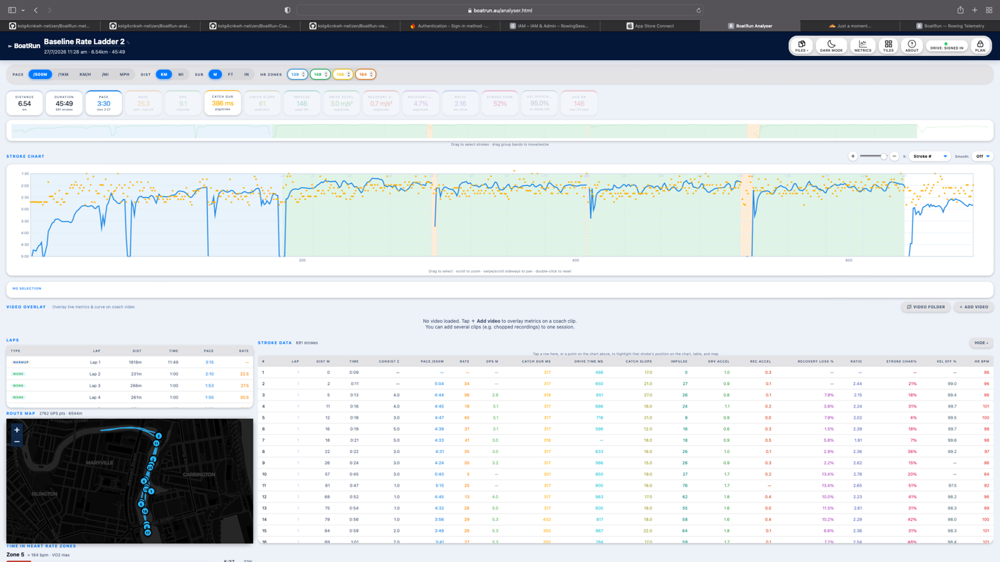
- X axis - By stroke number, distance in metres, or time in minutes
- Smooth - Smoothing off (raw data), or smoothed over 3, 5, 10, 15, 20 or 30 strokes. Turn it up to see trends, down to see individual strokes.
- Zoom - the ＋ / − buttons, the slider, or scroll on the chart
- Pan - swipe or scroll sideways, or use the pan slider
- Double-click resets zoom
- Drag across the chart to select a range of strokes
- Hover or tap for every value at the nearest stroke
The overview strip above is a miniature of the whole session. Drag on it to select; drag the coloured group bands to move or resize them.
Stats strip
Sits under the chart. Shows averages for whatever you’ve got selected, or for the current view if nothing is selected. From here, ＋ Add to curves pins the selection as a curve group.
Curve comparison
This is where the real analysis happens.
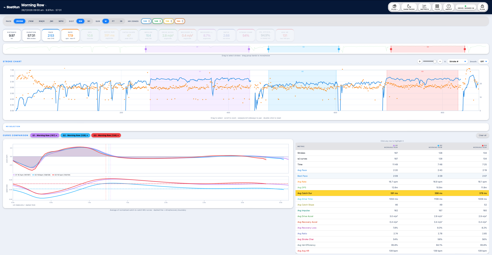
Pin up to 8 groups of strokes (BASIC and PRO) from multiple sessions (PRO only) and their averaged acceleration curves are overlaid on one canvas, time-normalised so the drive phases line up. Underneath each curve is the integrated speed profile - how the boat’s speed actually moved through the stroke.
Three ways to pin a group:
- Drag a selection on the chart → ＋ Add to curves
- Click a row in the lap table → the selection is set for you → ＋ Add to curves
- Drag an existing group band on the overview strip to move or resize it
The stats table beside it gives one column per group: stroke count, strokes with curve data, elapsed time, and averages for every metric. Click any row to temporarily highlight it.
Cross-session comparison is the point. Load two sessions, pin a group from each, and compare. The curve shape is derived from the accelerometer and is not affected by wind, tide or current - so unlike pace, curve comparison between two different days is always valid. If the shape changed, your mechanics changed.
Video overlay (Pro)
If your coach recorded clips in Coach mode, select the cloud drive where the videos were saved.
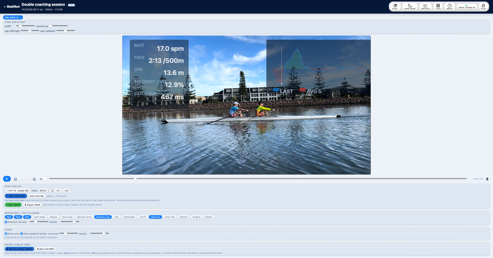
＋ Add video for individual files, or Video folder to point at a whole directory - the Analyser matches clips to the session by timestamp and flags the ones it recognises
- Playback controls with ±5s, ±0.1s frame stepping and fullscreen
- Sync from chart aligns the video to a specific stroke; Auto from file uses the file timestamp; ±0.1 nudges fine-tune it
- Save sync remembers the alignment
- Once synced, a line tracks across the stroke chart as the video plays, and live metrics plus the stroke curve overlay onto the video itself
- Record overlay (webm = small file) or Burn into MP4 (large file) exports the annotated video
Video format
Best: H.264 MP4 - plays everywhere, including desktop Chrome/Firefox/Safari and export via QuickTime.
Also fine: standard MOV/WebM if H.264-encoded.
Avoid: iPhone HEVC (.mov) - Chrome can’t decode it. Safari can, but for reliable overlay work across browsers you’re best converting HEVC clips to H.264 MP4 first (e.g. via QuickTime “Export As” or HandBrake).
Coach mode camera picks the best format your device’s MediaRecorder supports, in this priority order:
1. video/mp4;codecs=h264,aac - H.264 MP4 (preferred, what iOS gives you)
2. video/mp4 (generic)
3. video/webm variants (vp9/vp8, with/without opus audio) - fallback for devices without MP4 recording support
Laps, map and stroke data
Laps - every split. Click a lap row to zoom the chart to it and select all its strokes in one go.
Route map - the GPS track. Pinned curve groups show their segment in the group’s colour, so you can see exactly where on the water each comparison came from. A stroke selected in the table shows as a white marker.
Stroke data - every stroke, every metric, sortable by any column. Click a row to pin that stroke; it highlights on the chart and drops a marker on the map. Click again to unpin.
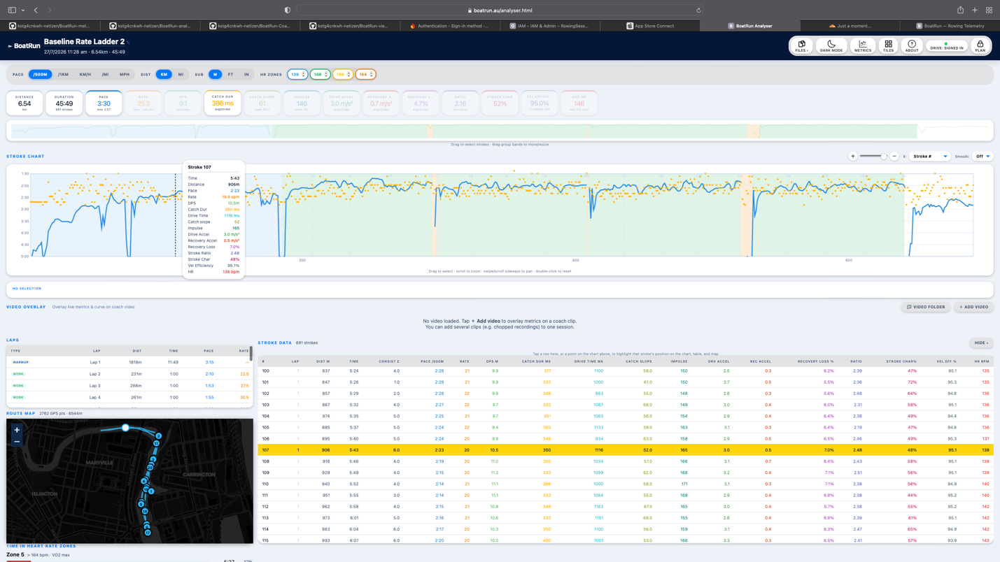
Exporting from the Analyser
Files → Export JSON (to share all data, including stroke curve with someone else on BoatRun Analyser), Export TCX or Export FIT (Recommended).
15. Viewer
For spectators, parents, and athletes waiting their turn. No install, no account, no cost - just a link.
- Open the Viewer URL or the QR provided by the coach
- Enter the squad code (DEMO2026 to view demo)
- CONNECT
You get a full-screen map with every rower as a labelled dot updating live, and a scrollable strip along the bottom with name, stroke rate and pace per rower. Cards grey out when the data goes stale.
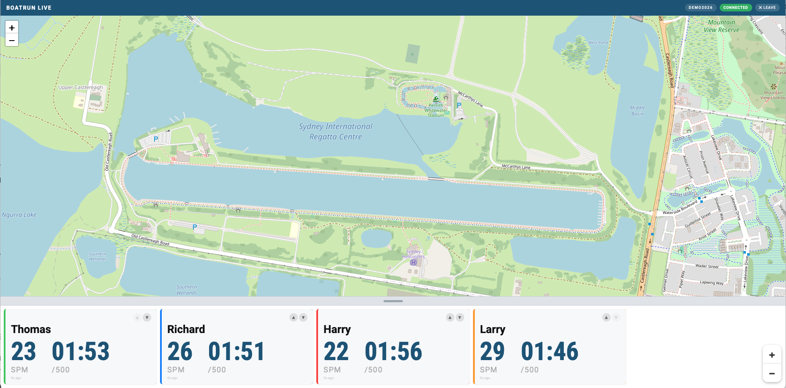
✕ LEAVE to disconnect.
Viewer is always fully free on every tier.
16. Metrics reference
Metrics are colour-coded by what influences them:
- 🟢 Independent - compare across any session, any conditions, any boat. Derived from accelerometer timing.
- 🔵 Boat dependent - a heavier boat gives lower readings for the same force. Compare within the same boat.
- 🔴 Condition dependent - GPS-derived. Tide, current and wind all move the number. Compare only in matched conditions and direction.
🔴 Pace
Boat speed, in your chosen unit. GPS Doppler speed over a sliding window. Suppressed when GPS accuracy is worse than 25m or the boat is barely moving.
Use: interval targets, lap-to-lap comparison within a session. Do not compare across days on tidal water unless conditions and direction match.
🔴 Moving Pace
Pace averaged only over the periods the boat was actually moving. A more honest average for sessions with stationary rests.
Use: the better number for interval training. A big gap between moving and average pace means a lot of time sat still.
🔴 Distance Per Stroke (DPS)
Boat travel per complete stroke cycle. Typically 7-11m in a single scull depending on rate and conditions.
Use: at equal pace, higher DPS means you’re achieving it at a lower rating. A mid-session drop at steady rate usually means fatigue.
🟢 Stroke Rate
Strokes per minute, from the median of recent catch-to-catch intervals, backed up by autocorrelation when the catch detector goes quiet.
Use: the control variable for structured work. Clears after a rest and returns after two new catches.
🟢 Stroke Ratio
Recovery time ÷ drive time. Higher means a longer, more relaxed recovery relative to the drive.
- 2.0-2.5 at training rates
- 1.5-1.8 at race rates
Use: the clearest sign of a hurried stroke. If ratio collapses as rate climbs, you’re shortening the recovery instead of quickening the drive.
🟢 Stroke Char (%)
Where in the drive the peak acceleration lands. 0% = at the catch, 100% = at the finish.
- 30-45% - front-loaded
- 50-60% - mid-drive
- 65%+ - back-loaded (or soft/late catch)
Use: rising Char through a session means the catch is going under fatigue. Pair it with Catch Slope - high slope with low Char is clean front-end loading.
🟢 Recovery Loss
Speed lost to deceleration during the recovery, normalised per second of recovery so the number is comparable across stroke rates. Accelerometer-derived, condition-independent. Lower is better.
Use: high Impulse with high Recovery Loss means energy is going into deceleration - often the rating is too low for the force you’re putting in. Low Impulse with low Recovery Loss is an efficient, consistent drive.
🔵 Catch Slope
How fast acceleration rises at the catch. Higher means a sharper, more aggressive catch.
Shown as a rolling average with the session peak alongside.
Use: rising slope as rate increases means you’re adapting well. Falling slope means the catch is being sacrificed for cadence. A big gap between average and peak means you can produce a good catch but not repeat it.
🔵 Catch Consistency
Standard deviation of recent catch slopes. Lower is more repeatable.
Use: consistency degrading late in a session is an early fatigue signal - it usually shows before pace drops.
🔵 Catch Dur
Time from the catch trigger to the peak of drive acceleration. Not the whole drive. Accelerometer-derived and essentially unaffected by boat speed, which makes it unusually readable across a session - rate barely moves it.
Use: shorter can mean a sharper build to peak force, a quicker, more connected catch and not rowing the oar in. It is not a measure of length or full drive time.
🔵 Drive Time
Time from peak drive acceleration to blade exit - the back half of the drive, complementing Catch Dur. Same accelerometer source, so it covers every stroke regardless of GPS.
Use: add it to Catch Dur for a full-drive estimate. Watching the split between the two shows whether you’re changing the front or the back of the drive.
🔵 Impulse
Total positive acceleration through the drive, integrated as a change in velocity (Δv). Higher means more drive power delivered to the hull. It’s a total, not a peak.
Use: condition-independent measure of how hard the boat got pushed. Impulse rising at constant pace means more effort for the same result. Impulse falling at improving pace means you’re getting more efficient.
🔵 Drive Accel
Peak forward acceleration during the drive, catch to finish, in m/s².
Use: the sharp end of the drive. Read alongside Impulse - high peak with modest impulse means a spike rather than a sustained push. This is the figure displayed on the top left of the stroke curve.
🔵 Recovery Accel
Peak forward acceleration during the recovery, measured after the small drag-dip that follows the finish hands away, in m/s².
Use: how much the boat is being pulled toward the rower in the recovery. At high ratings, this figure should be increasing. This is the figure displayed on the top right of the stroke curve.
🔵 Vel Efficiency (%)
Hydrodynamic efficiency of the boat’s speed profile within a single stroke. Drag power rises with the cube of speed, so a boat that surges and slows wastes energy against one holding a constant speed.
- 100% - a perfectly steady hull
- 93-97% - typical sculling
Higher is better.
Use: the cleanest single number for run quality. It replaces the old Check Delta, which measured the same underlying thing but as a raw speed swing that meant nothing without context.
🟢 Heart Rate
From a connected Bluetooth strap, with zone colouring.
17. Limitations and warnings
GPS metrics measure over the ground, not through the water
Pace and DPS measure motion relative to the ground. On a tidal river a 0.3 m/s following current improves your displayed pace by roughly 10 seconds per 500m at a 2:00 baseline. DPS is inflated downstream and deflated upstream for exactly the same reason.
The accelerometer metrics - rate, ratio, Stroke Char, Catch Slope, Catch Dur, Drive Time, Impulse, Drive Accel, Recovery Accel, Recovery Loss - are unaffected by current. These are your reliable technique metrics on tidal water.
The mount matters more than anything else
Every accelerometer metric assumes the phone is rigidly attached to the hull. Any independent movement corrupts all of them. A mount that rocks near stroke frequency is particularly bad - it corrupts stroke ratio and Stroke Char specifically, and it does so plausibly enough that you might believe the numbers.
Recalibrate whenever you move the phone.
Axis lock after a long rest
Axis lock can drift after a long stop. The AX pill goes orange when unlocked. If it stays orange after several strokes, row steadily for 20-30 strokes to let the detector relock.
Crew boats
In doubles, quads and eights the accelerometer sees all the rowers superimposed. Stroke detection follows the dominant signal, usually stroke seat. At high rates, adjacent catches can trigger false detections. Catch Slope and Impulse values are not comparable with single-scull values.
No absolute force measurement
These metrics measure the hull’s acceleration response to blade force, not the force itself. The same force produces very different accelerations in a single and an eight. Never compare Catch Slope, Impulse, Drive Accel or Recovery Loss across boat classes.
Cold and battery
Below about 5°C the phone may throttle its CPU or drop the sensor polling rate. Keep it warm before launching. Start long sessions at full charge, and see the battery notes if you’re connected to a squad.
Squad features need mobile data
Not Wi-Fi. Squad, Coach and Viewer all need an active mobile connection on the water. Recording is entirely local and continues regardless - the live view is best-effort. Rower tiles grey out under bridges and in poor signal; that’s normal.
Protecting your data
- Confirm the synced badge before you rely on Drive as your only copy
- Export JSON immediately after a significant session
- Tap Finish rather than force-closing the app
Critical alerts
Some faults stop metrics being recorded altogether. Rather than let you find out afterwards, BoatRun puts a red alert over the screen, vibrates, and waits for you to tap DISMISS. Each alert has a cooldown so it can never nag you through a piece. You can carry on rowing after any of them - the session keeps recording everything that still works, and the alert tells you which numbers to ignore afterwards.
| GPS UNRELIABLE D | egraded GPS for more than 45 seconds while rowing. Pace, distance and DPS over that stretch are not trustworthy. Move the phone clear of bags and bodies so it has a clear view of the sky. |
|---|---|
| NO GPS - NOT RECORDING N | o fix at all since the session started, or GPS silent for over 30 seconds. Pace, distance, DPS and Recovery Loss are lost; stroke rate and the curve are unaffected. Get clear of bridges and overhangs and check Location Services is on. |
| GPS SIGNAL LOST P | osition fixes stopped arriving mid-session. Pace, distance and DPS are lost until it re-acquires. Keep the phone screen-up with a clear view of the sky - the app re-arms GPS by itself. |
| LOCATION PERMISSION DENIED B | oatRun does not have location access. Pace, distance, DPS and your route are lost for the whole session. iOS Settings → Privacy → Location Services → BoatRun → While Using the App, then restart the app. |
| GPS UNAVAILABLE L | ocation services could not be started. Pace, distance, DPS and your route are lost for the whole session. Restart the app and check Location Services is on for the phone as a whole. |
| NO LOCATION SERVICES T | he device is not providing location data at all. Pace, distance, DPS and your route are lost. Restart the phone if it persists. |
| MOTION SENSOR STOPPED T | he accelerometer has not reported for over 8 seconds. Stroke rate, the curve and every stroke metric are lost; GPS pace and distance keep recording. Usually an iOS suspend - close and reopen the app. |
| MOTION SENSOR NOT REPORTING N | o accelerometer data is arriving. Stroke rate, the curve and every stroke metric stay blank. Close and reopen the app, and check iOS Settings → BoatRun → Motion & Fitness. |
18. Troubleshooting
Stroke detection not triggering Recalibrate with the phone in the mount and the boat still. If the AX pill stays orange for more than a minute the signal is too weak on every axis - check the mount is rigid and flat.
AX pill shows the wrong axis Settings → SYSTEM SETTINGS → SURGE AXIS → FORCE X or FORCE Y. Only do this if AUTO is genuinely reading it wrong; the automatic pin is correct almost always. The best way to check is watching the stroke curve. If it is significantly wrong, it’s probably an axis detection issue.
GPS DEGRADED or PACE HELD keeps flashing up Both are normal near bridges, trees and buildings. Make sure the phone is not under a jacket, a bag or your body. If GPS DEGRADED stays up for 45 seconds you will also get the GPS UNRELIABLE alert, meaning pace and distance over that stretch should not be trusted.
A red alert covered the screen mid-row That is a critical fault, not a nuisance warning. Tap DISMISS and keep rowing. See Critical alerts for what each one means and what it costs you.
Pace high, or dropping out GPS accuracy must be better than 25m. Under bridges and near tall buildings it will drop out briefly. On tidal water pace is over-ground speed - that’s expected, not a fault.
Recording stopped at 5 minutes Basic tier limit. Upgrade to Pro for unlimited recording.
Tiles say PRO - Upgrade to unlock That metric is Pro-only. The tile stays visible so you can see what’s there.
Drive sync failing Check Drive is connected ( ). Pending sessions retry automatically when the connection comes back. Export JSON as a backup if it keeps failing.
Session missing from the phone HOME → LOG → ☁ Restore from Drive.
Deleted a session and want it back If it had synced, it’s still in Drive. Restore from Drive.
Session still showing in the Analyser after deleting it on the phone Working as designed. Phone deletion is local only - delete it from Drive using the trash icon in the Analyser’s session list.
HR strap won’t connect Wet the contacts, put it on before connecting, and make sure no watch or other app has already claimed it.
No rowers appearing in Coach Every phone needs mobile data, not Wi-Fi. Confirm the squad code matches exactly. Check the connection status in Settings.
Rower tiles going grey No recent data. Check that rower is actually recording and not paused. Intermittent grey under bridges is normal.
Battery draining fast You’re probably connected to a squad. See the battery notes.
Analyser chart looks empty All series may be toggled off - click any summary card to bring one back. Or you’re zoomed into a gap; double-click the chart to reset.
No Personal Bests showing Run Scan All for Records on the Analyser home screen.
Strava upload not appearing Pro only, and Strava must be linked in Settings. For a manual upload, export FIT and add it to Strava as an activity of type Rowing.
Found a bug or have an idea? Email feedback from the About screen.